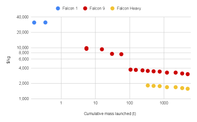

Weryfikacja tez sceptycznego artykułu
Notatka raportu "Orbitalne centra danych". Kluczowe źródła: źródło 1, źródło 2.
W skrócie
Sceptyczny artykuł "Centra przetwarzania danych na orbicie nie mają sensu" formułuje osiem tez, które po sprawdzeniu okazują się mieszanką prawdy częściowej, faktów wyrwanych z kontekstu i kilku jawnych błędów. Dla inwestora najważniejszy wniosek brzmi: orbitalne centra danych (ODC - data center umieszczony na satelicie/konstelacji na orbicie okołoziemskiej) są dziś rzeczywiście drogie, ale skala tej drożyzny jest dokładnie mierzona. SemiAnalysis liczy, że całkowity koszt posiadania (TCO - total cost of ownership, czyli pełny rachunek przez cały cykl życia, nie tylko zakup) w kosmosie wynosi 8,64 USD/godz./GPU wobec 2,37 USD/godz./GPU na Ziemi, a więc około 3,6x drożej (a nie "co najmniej 2x", jak ostrożnie pisze artykuł) źródło. Kto zyskuje: gracze tnący koszt wynoszenia (SpaceX) i koszt energii orbitalnej (Starcloud twierdzi ~0,002 USD/kWh). Kto traci: każdy, kto wchodzi przed spadkiem kosztów Starship. Tempo zmian: artykuł najczęściej myli cztery pary pojęć (moc elektryczna a IT load, masa paneli a masa systemu, CAPEX a TCO, pojedynczy satelita a konstelacja), więc jego pesymizm jest miejscami przesadzony, a miejscami zbyt łagodny.
Uwaga źródłowa: oryginalny polski artykuł nie został zlokalizowany w publicznie dostępnych źródłach podczas researchu, więc poszczególne tezy weryfikujemy wobec ich treści opisanej w zleceniu, oznaczając POTWIERDZENIE / CZĘŚCIOWE / OBALENIE / NIE UJAWNIONE źródło.
Powiązane wątki
Mapa powiązań tematycznych - jak ten wątek łączy się z resztą raportu.
- Ekonomika i TCO - tezy o koszcie wyniesienia i "2x drożej" rozwija analiza TCO
- Energetyka kosmiczna - teza o panelach 200 MW = masa/powierzchnia paneli to fizyka PV
- Chłodzenie - teza o chłodzeniu w próżni to mechanizm radiacyjnego oddawania ciepła
- Promieniowanie i elektronika - teza o drogiej elektronice rad-hard to koszt vs COTS
- Łączność optyczna - tezy o Starlink i latencji to warstwa łączności ISL/downlink
- Fizyka orbitalna - teza o widoczności 5 minut to geometria przelotu SSO
Teza 1: udźwig Falcon 9 na SSO ~15 t i koszt ~5500 USD/kg rideshare
Werdykt: częściowe potwierdzenie z kontekstem historycznym. SSO (Sun-Synchronous Orbit - orbita synchroniczna ze Słońcem, na której satelita przelatuje nad danym punktem zawsze o tej samej porze) ma niższy udźwig niż zwykłe LEO (Low Earth Orbit - niska orbita okołoziemska). Cena 5500 USD/kg odpowiada cennikowi rideshare (rideshare - lot współdzielony, gdy wielu klientów dzieli jedną rakietę) z marca 2022, gdy 200 kg kosztowało 1,1 mln USD, czyli właśnie 5500 USD/kg 🟠 źródło. Aktualny oficjalny cennik SpaceX jest jednak wyższy: dodatkowa masa na SSO to 7000 USD/kg (przy bazie 350 tys. USD za 50 kg) 🔵 źródło. Liczba 15 t na SSO nie znajduje potwierdzenia w przewodniku SpaceX: dla orbity kołowej 600 km SSO podawano udźwig 7541 kg 🔵 źródło, a wartości rzędu 22 000 kg dotyczą LEO z Cape Canaveral, nie SSO 🟠 źródło. Dla skali wykorzystania: SpaceX wozi już średnio 16 850 kg ładunku Starlink, co stanowi 96% maksymalnej pojemności 17,5 t do LEO 🟠 źródło. NIE UJAWNIONE: brak publicznego potwierdzenia, że artykuł użył dokładnie 15 t na SSO - liczba może pochodzić z zaokrąglenia danych LEO. Implikacja dla inwestora: koszt wynoszenia jest dziś wyższy niż w tezie artykułu, więc business case ODC stoi i upada wraz z tańszym Starshipem, nie z Falconem 9.

Rys. 7 - Krzywa kosztu wynoszenia SpaceX - weryfikacja tezy o oplacalnosci. Źródło: Google Research / arXiv 2511.19468, licencja: arXiv open access - do uzytku wlasnego.
#grafika #weryfikacja-tez-sceptycznego-artykulu #koszt #launch
xychart-beta
title "Udzwig Falcon 9 na SSO: teza vs dane"
x-axis ["Teza artykulu", "User Guide 600 km SSO"]
y-axis "kg" 0 --> 16000
bar [15000, 7541]
Rys. 8 - Teza artykułu (15 t = 15000 kg) wobec udźwigu z przewodnika SpaceX dla orbity kołowej 600 km SSO (7541 kg). Dane: Falcon 9 User Guide (Spaceflight Now).
Teza 2: panele 200 MW = min. 80 ha i min. 8 tys. ton
Werdykt: częściowe potwierdzenie przy starej technologii ISS, obalenie przy nowoczesnych ogniwach cienkowarstwowych. To kluczowy przykład mylenia masy paneli z masą systemu. Stare panele ISS (8 skrzydeł, ~2500 m²) miały łączną masę systemu rzędu 60 000 kg i dawały zaledwie ~100 kWe średniej mocy 🟠 źródło - to przekłada się na ~24 kg/m² i charakterystykę 0,6 kg/W przy 1 AU (jednostka astronomiczna - odległość Ziemia-Słońce) 🟠 źródło. Przy takiej archaicznej technologii 200 MW rzeczywiście wymagałoby ~80 ha (hektar = 10 000 m²) i kilkunastu tysięcy ton, więc teza artykułu jest zbliżona - ale tylko dla technologii sprzed dwóch dekad. Starcloud projektuje na ogniwach cienkowarstwowych o gęstości mocy >1000 W/kg 🔵 źródło, przy których data center 5 GW potrzebuje tablicy ~4 km na 4 km, czyli 16 km² 🔵 źródło. To daje ~320 W/m², więc 200 MW zajęłoby kilkanaście razy mniej powierzchni i masy niż w tezie. NIE UJAWNIONE: brak źródła, z którego artykuł wziął dokładnie 80 ha i 8 tys. ton - wygląda na estymatę z technologii ISS. Implikacja dla inwestora: teza "panele są ciężkie" jest prawdziwa dla wczoraj, ale gęstość mocy ogniw rośnie, a to ona decyduje o masie wynoszonej na orbitę, czyli o koszcie.
Teza 3: chłodzenie w próżni trudniejsze niż na Ziemi
Werdykt: częściowe potwierdzenie. W próżni nie ma konwekcji (przekazywania ciepła przez ruch powietrza), więc każdy wat ciepła trzeba odprowadzić wyłącznie przez promieniowanie - to wymaga dużych radiatorów. Z drugiej strony kosmos jest bardzo zimnym zlewem ciepła i nie ma atmosfery hamującej wymianę. Starcloud podaje, że radiator utrzymany w 20°C emituje 385,24 W/m² z jednej strony 🔵 źródło, a płyta 1 m² promieniująca z obu stron oddaje 770,48 W 🔵 źródło - to liczba korzystna. Trudność jest jednak realna kosztowo: SemiAnalysis wlicza chłodzenie/radiatory w CAPEX, który dla data center w kosmosie startuje od 8x wyższego niż naziemny 🟠 źródło, a miesięczne zlewelizowane koszty kapitałowe są nawet 18x wyższe niż naziemnie 🟠 źródło. NIE UJAWNIONE: brak bezpośredniego porównania "łatwości chłodzenia" w liczbach - trudność wynika z braku konwekcji i konieczności radiatorów, nie z temperatury otoczenia. Implikacja dla inwestora: chłodzenie nie jest barierą fizyczną nie do przejścia, lecz pozycją kosztową i masową, która podbija CAPEX.
Teza 4: Starlink nie jest internetem szerokopasmowym
Werdykt: obalenie. Oficjalnie i w praktyce Starlink jest klasyfikowany jako szerokopasmowy. SpaceX reklamuje go jako "high-speed, low-latency broadband internet", a oficjalne specyfikacje mówią o 25-220 Mbps pobierania 🟠 źródło. Pomiary Ookla za Q1 2025 w USA: mediana pobierania 104,71 Mbps (wzrost niemal dwukrotny z 53,95 Mbps w Q3 2022) 🟠 źródło i mediana opóźnienia 45 ms 🟠 źródło. FCC (amerykański regulator) definiuje szerokopasmowość jako 100/20 Mbps i 17,42% użytkowników Starlink w USA spełnia ten próg - ograniczeniem jest głównie upload, nie download 🟠 źródło. Po stronie sprzętu: Starlink V2 Mini ma 96 Gbps zagregowanego pasma na satelitę 🔵 źródło, a planowany V3 ma oferować 1 Tbps downlinku i 160 Gbps uplinku na satelitę 🟠 źródło. Implikacja dla inwestora: jeśli artykuł kwestionuje przepustowość downlinku ODC, robi to wbrew danym - Starlink udowadnia, że łącze satelitarne może być szybkie i nisko-opóźnieniowe.
Teza 5: satelity SSO widoczne nad obszarem tylko 5 minut
Werdykt: potwierdzenie dla pojedynczej stacji naziemnej, obalenie dla konstelacji/relay. NASA już w 1994 pisała, że pojedyncza stała stacja naziemna daje 2-4 sensowne kontakty dziennie po maksymalnie 5 minut na kontakt dla tej wysokości orbity 🔵 źródło. Przy typowej orbicie LEO o okresie 90-110 minut 🟠 źródło kontakt z jedną stacją jest faktycznie krótki. Ale stacje polarne (koncepcja Kinuvik SSC) potrafią wydłużyć kontakt do 25 minut lub więcej na przelot 🔵 źródło, a konstelacja z laserowymi łączami zapewnia uptime łącza >99% na flocie terminali 100G w LEO 🔵 źródło. Co najważniejsze: ograniczona widoczność z jednej stacji to NIE jest problem zasilania - tablica słoneczna na orbicie ma współczynnik wykorzystania >95%, bez cyklu dzień/noc 🔵 źródło. Implikacja dla inwestora: "5 minut" dotyczy łączności z jednym punktem, nie ciągłości pracy data center - mylenie tych dwóch rzeczy zaniża realny potencjał ODC.
Teza 6: elektronika rad-hard kilkaset razy droższa
Werdykt: potwierdzenie dla tradycyjnej rad-hard, obalenie dla nowoczesnej RHBD/COTS w LEO. Rad-hard (radiation hardened - utwardzony radiacyjnie, odporny na promieniowanie kosmiczne) procesor BAE RAD750 kosztuje ponad 200 000 USD 🔵 źródło, podczas gdy COTS (Commercial Off-The-Shelf - układy komercyjne z półki) kosztują kilkaset USD - to różnica setek do kilku tysięcy razy dla procesorów. Dla FPGA (programowalny układ logiczny) różnica jest mniejsza: rad-hard 25 000 EUR wobec COTS 2500 EUR, czyli 10x 🟠 źródło. Nowoczesne podejście RHBD (Radiation Hardening by Design - utwardzanie poprzez projekt na zwykłym procesie) tnie ten koszt: Microchip rozwija space-grade FPGA dla komercyjnych satelitów LEO za 800-1200 USD za sztukę 🟠 źródło. Starlink stosuje COTS z redundancją i ECC (Error-Correcting Code - korekcja błędów pamięci), a nie drogiej elektroniki rad-hard. NIE UJAWNIONE: brak źródła potwierdzającego dosłownie "kilkaset razy droższa" - najbliżej jest 10x dla FPGA i setki-kilka tysięcy razy dla procesorów. Implikacja dla inwestora: koszt elektroniki nie jest stały - architektura COTS plus redundancja (model Starlink) może drastycznie obniżyć tę pozycję w ODC.
xychart-beta
title "Koszt procesora rad-hard vs COTS"
x-axis ["RAD750 rad-hard", "COTS (gorny szac.)"]
y-axis "USD" 0 --> 200000
bar [200000, 1200]
Rys. 9 - Procesor rad-hard BAE RAD750 (ponad 200 000 USD) wobec górnego szacunku układu COTS/RHBD (1200 USD za sztukę). Dane: RAD750 cost (MIT DSpace), FactMR rad-hard market.
Teza 7: orbitalne DC co najmniej 2x droższe niż naziemne
Werdykt: potwierdzenie, a nawet wzmocnienie - w 2026 jest znacznie drożej niż 2x. To kluczowy obszar mylenia CAPEX z TCO. SemiAnalysis liczy TCO dla GPU B300 na 8,64 USD/godz./GPU w kosmosie wobec 2,37 USD/godz./GPU naziemnie (~3,6x) 🟠 źródło, a zlewelizowany koszt obliczeń LCOC z redundancją i radiacją to 10,91 USD/godz./GPU wobec 2,49 USD/godz./GPU (~4,4x) 🟠 źródło; różnica startuje od ponad 4x w 2026 🟠 źródło. Niezależna analiza pierwszych zasad Andrew McCalipa daje LCOE (Levelized Cost of Energy - zlewelizowany koszt energii) 1167 USD/MWh orbitalnie wobec 426 USD/MWh naziemnie oraz CAPEX 51,10 USD/W wobec 15,85 USD/W (>3x) 🟠 źródło. Starcloud kontruje, że długoterminowo (po ~2040) koszty mogą się zrównać dzięki Starship i tańszej energii słonecznej. Implikacja dla inwestora: teza "2x" jest ostrożnym minimum - realna przewaga kosztowa Ziemi jest dziś 3-4x, więc ODC potrzebują albo radykalnego spadku kosztów wynoszenia, albo nisz, gdzie liczy się darmowa energia i chłodzenie, nie cena za GPU.
xychart-beta
title "Koszt na godzine GPU: kosmos vs Ziemia"
x-axis ["TCO kosmos", "TCO Ziemia", "LCOC kosmos", "LCOC Ziemia"]
y-axis "USD/godz./GPU" 0 --> 12
bar [8.64, 2.37, 10.91, 2.49]
Rys. 10 - TCO (8,64 vs 2,37; ~3,6x) i LCOC z redundancją i radiacją (10,91 vs 2,49; ~4,4x) dla GPU B300 w 2026. Dane: SemiAnalysis - space datacenters.
xychart-beta
title "CAPEX i LCOE: kosmos vs Ziemia (McCalip)"
x-axis ["CAPEX kosmos", "CAPEX Ziemia"]
y-axis "USD/W" 0 --> 55
bar [51.10, 15.85]
Rys. 11 - CAPEX na wat: orbitalnie 51,10 USD/W wobec 15,85 USD/W naziemnie (ponad 3x); analiza pierwszych zasad. Dane: Andrew McCalip - space datacenters.
Teza 8: konstelacja wymaga ciężkich systemów komunikacyjnych i ma dużą latencję
Werdykt: częściowe potwierdzenie co do masy, obalenie co do latencji i przepustowości. Masa rośnie: Starlink V3 waży ~1900 kg wobec ~575 kg V2 Mini, głównie przez większą moc i komunikację 🟠 źródło. Ale latencja LEO jest niska: mediana Starlink 28-45 ms 🟠 źródło, wobec 45 ms zmierzonych przez Ookla 🟠 źródło, czyli porównywalnie z LTE/kablem i znacznie poniżej GEO (orbita geostacjonarna, 600+ ms). Przepustowość międzysatelitarna ISL (Inter-Satellite Link - łącze laserowe między satelitami) to 200 Gbps na link 🔵 źródło i >42 PB (petabajtów) ruchu dziennie przez łącza lasercom 🔵 źródło, a V3 ma mieć ~4 Tbps łącznego backhaulu RF i laserowego 🟠 źródło. Implikacja dla inwestora: "duża latencja" nie dotyczy konstelacji LEO z laserowymi ISL - krytyka jest aktualna tylko dla GEO lub pojedynczego satelity.
Kontrowersje
K1: artykuł myli moc elektryczną z IT load, masę paneli z masą systemu, CAPEX z TCO, satelitę z konstelacją
Strona sceptyczna (implikowana): koszt i masa paneli równa się kosztowi i masie całego systemu, a CAPEX równa się całkowitemu kosztowi. Strona przeciwna (dane): TCO w kosmosie to 8,64 USD/godz./GPU wobec 2,37 USD/godz./GPU naziemnie 🟠 źródło, ale sam koszt operacyjny zasilania to zaledwie 0,21 USD/godz./GPU 🟠 źródło, a alokowane koszty operacji 0,36 USD/godz./GPU 🟠 źródło; Starcloud deklaruje ekwiwalentny koszt energii ~0,002 USD/kWh 🔵 źródło. Wniosek: energia orbitalna jest praktycznie darmowa po poniesieniu CAPEX, a wysoki TCO bierze się głównie z wynoszenia i redundancji, nie z samej energii - artykuł, zrównując panele z systemem i CAPEX z TCO, błędnie lokuje źródło kosztu.
K2: artykuł myli widoczność z naziemnej stacji z nasłonecznieniem orbity dawn-dusk
Strona sceptyczna (implikowana): SSO = krótki kontakt = brak ciągłości zasilania. Dane potwierdzające krótki kontakt: do 5 minut na kontakt z pojedynczej stacji 🔵 źródło. Dane obalające brak ciągłości zasilania: współczynnik wykorzystania tablicy słonecznej >95% 🔵 źródło oraz "high-intensity 24/7 solar power unhindered by day/night cycles" 🔵 źródło. Wniosek: orbity dawn-dusk SSO (przebiegające wzdłuż granicy dnia i nocy) dają prawie ciągłe nasłonecznienie; krótki kontakt z konkretną stacją naziemną nie jest problemem zasilania, lecz tylko łączności, którą rozwiązują stacje polarne i laserowe ISL.
K3: satelita vs konstelacja
Strona sceptyczna (implikowana): pojedynczy satelita ma małą przepustowość i dużą latencję. Dane o pojedynczym satelicie: 96 Gbps na satelitę V2 🔵 źródło. Dane o konstelacji: >42 PB ruchu dziennie przez łącza lasercom 🔵 źródło oraz >9000 terminali lasercom na orbicie 🔵 źródło. Wniosek: krytyka pojedynczego satelity nie przenosi się na konstelację z laserowymi ISL, której zagregowana przepustowość idzie w setki Tbps przy niskiej latencji LEO.
Słowniczek pojęć
- ODC (Orbital Data Center) - centrum danych umieszczone na satelicie lub konstelacji na orbicie okołoziemskiej.
- SSO (Sun-Synchronous Orbit) - orbita synchroniczna ze Słońcem, na której satelita przelatuje nad danym punktem zawsze o tej samej porze.
- LEO (Low Earth Orbit) - niska orbita okołoziemska o okresie obiegu rzędu 90-110 minut.
- GEO (orbita geostacjonarna) - wysoka orbita, na której satelita stoi nieruchomo nad jednym punktem, ale kosztem dużej latencji (600+ ms).
- rideshare - lot współdzielony, w którym wielu klientów dzieli koszt jednej rakiety.
- USD/kg - koszt wyniesienia jednego kilograma ładunku na orbitę, kluczowy wskaźnik ekonomiki kosmosu.
- CAPEX - nakłady inwestycyjne, czyli jednorazowy koszt zbudowania i wyniesienia systemu.
- TCO (Total Cost of Ownership) - całkowity koszt posiadania przez cały cykl życia, nie tylko zakup.
- LCOC (Levelized Cost of Compute) - zlewelizowany koszt obliczeń w przeliczeniu na godzinę pracy GPU.
- LCOE (Levelized Cost of Energy) - zlewelizowany koszt energii w przeliczeniu na MWh.
- rad-hard (radiation hardened) - elektronika specjalnie utwardzona, aby przetrwać promieniowanie kosmiczne.
- RHBD (Radiation Hardening by Design) - tańsza metoda uodparniania układów poprzez sam projekt, na zwykłym procesie produkcyjnym.
- COTS (Commercial Off-The-Shelf) - tanie układy komercyjne z półki, używane zamiast drogiej elektroniki rad-hard.
- ISL (Inter-Satellite Link) - laserowe łącze między satelitami, pozwalające przesyłać dane bez schodzenia na Ziemię.
- capacity factor - współczynnik wykorzystania, czyli jaką część czasu instalacja realnie pracuje na pełnej mocy.
Linkują tutaj
4 powiązanych notatek